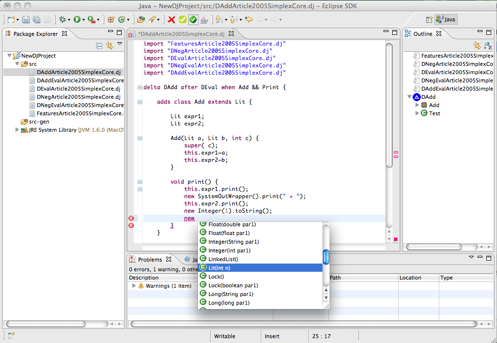

The code completion provides an help using a drop-down window that suggests all the code elements that can be used in a specific context.
For instance when you type 'this.' a window automatically appears and shows all the field an methods invokable on the 'this' parameter.
You can open the proposal window in every par of the code editor with CTRL + SPACE and to press ENTER to choose an element.
The code completion window automatically appears every time that the '.' character is typed.